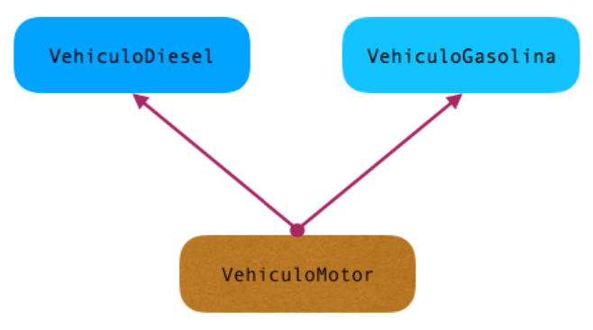
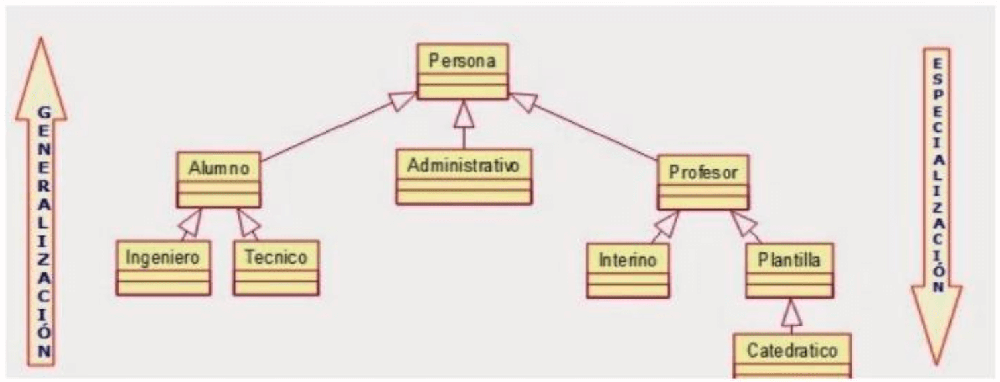

Herencia¶
{kind=link}
La herencia es una de las características fundamentales de la Programación Orientada a Objetos (POO). Mediante la herencia podemos definir una clase a partir de otra ya existente. La clase nueva se llama clase derivada o subclase y la clase existente se llama clase base o superclase. La clase derivada hereda los miembros (atributos y métodos) de la clase base.
La finalidad de la herencia es:
- Extender la funcionalidad de la clase base: en la clase derivada se pueden añadir atributos y métodos nuevos.
- Especializar el comportamiento de la clase base: en la clase derivada se pueden modificar (sobrescribir,
override) los métodos heredados para adaptarlos a sus necesidades.
La herencia permite la reutilización del código, ya que evita tener que reescribir de nuevo una clase existente cuando necesitamos ampliarla en cualquier sentido. Todas las clases derivadas pueden utilizar el código de la clase base sin tener que volver a definirlo en cada una de ellas.
Tipos de herencia en los lenguajes¶
Existen dos tipos de herencias: simples y múltiples.
La herencia múltiple es básicamente que una clase puede heredar de dos clases base. Aunque la típica afirmación de que Java no soporta herencia múltiple no es del todo exacta (se simula mediante interfaces), no es recomendable su uso, ya que, a pesar de su potencia, nos puede llevar a complicaciones en la estructura como es la temida herencia con estructura diamante.
{kind=link}

Es por ello que, salvo que sea realmente estricto nos quedaremos con la herencia simple. Una clase base puede serlo de tantas derivadas como se desee: Un solo padre, varios hijos.
Herencia en Java¶
Un objeto de una clase derivada es, a su vez, un objeto de su clase base, por lo tanto, se puede sustituir en cualquier lugar donde aparezca un objeto de la clase base. Si esto no fuese posible entonces la herencia no está bien planteada.
Ejemplo de planteamiento de herencia
A partir de la clase Persona, que tiene como atributos el nif y el nombre, podemos obtener una clase derivada Alumno. Un Alumno es una Persona que tendrá como atributos nif, nombre y curso. Su uso es correcto ya que un Alumno es una Persona.
A la hora de visualizar la herencia de nuestro programa se puede llegar a complicar con conceptos como generalizaciones o especializaciones. Siguiendo con el ejemplo de Persona, se podría llegar a algo como a lo de la imagen:
{kind=link}

Las clases más generales se sitúan en lo más alto de la jerarquía. Cuánto más arriba en la jerarquía, menor nivel de detalle. Cada clase derivada debe implementar únicamente lo que la distingue de su clase base. En Java todas las clases derivan directa o indirectamente de la clase Object. Esta es la clase base de toda la jerarquía de clases Java. Todos los objetos en un programa Java son Object.
Las clases derivadas cumplen una serie de propiedades:
- Una clase derivada hereda de la clase base sus componentes (atributos y métodos).
- Los constructores no se heredan. Las clases derivadas deberán implementar sus propios constructores.
- Una clase derivada puede acceder a los miembros públicos y protegidos de la clase base como si fuesen miembros propios.
- Una clase derivada no tiene acceso a los miembros privados de la clase base. Deberá acceder a través de métodos heredados de la clase base.
- Si se necesita tener acceso directo a los miembros privados de la clase base se deben declarar
protecteden lugar deprivateen la clase base. - Una clase derivada puede añadir a los miembros heredados, sus propios atributos y métodos (extender la funcionalidad de la clase).
- También puede modificar los métodos heredados (especializar el comportamiento de la clase base).
- Una clase derivada puede, a su vez, ser una clase base, dando lugar a una jerarquía de clases.
Extensión de una clase¶
La herencia en Java se expresa mediante la palabra extends, es decir se extiende la clase base a la clase derivada. Por ejemplo, para declarar una clase B que hereda de una clase A:
public class B extends A { … }
Si lo vemos con un ejemplo
public class Persona {
private String dni;
private String nombre;
public String getDni() { return dni;}
public void setDni(String dni) { this.dni = dni;}
public String getNombre() { return nombre;}
public void setNombre(String nombre) { this.nombre = nombre;}
}
public class Alumno extends Persona {
private String curso;
public String getCurso() { return curso; }
public void setCurso(String curso) { this.curso = curso; }
}
La clase Alumno hereda los atributos nombre y dni de la clase Persona, y añade el atributo curso. Por lo tanto:
- Los atributos de la clase Alumno son dni, nombre y curso.
- Los métodos de la clase Alumno son:
getDni(),setDni(String dni),getNombre(),setNombre(String nombre),getCurso(),setCurso(String curso).
La clase Alumno, aunque hereda los atributos dni y nombre, no puede acceder a ellos de forma directa ya que son privados a la clase Persona. Se acceden a través de los métodos heredados de la clase base. La clase Alumno puede utilizar los miembros public y protected de la clase Persona como si fueran propios.
Jerarquía de clases
En una jerarquía de clases, cuando un objeto invoca a un método:
- Se busca en su clase el método correspondiente.
- Si no se encuentra, se busca en su clase base.
- Si no se encuentra, se sigue buscando hacia arriba en la jerarquía de clases hasta que el método se encuentra.
- Si al llegar a la clase raíz el método no se ha encontrado se producirá un error.
Actividades¶
-
AC 701 (RA4/ CE4g CE4h CE4i / IC1 / 3p). Realiza la implementación de la siguiente imagen:
Personatiene como atributos:dni,sexoyanyoNacimiento. Además de los métodos que accedan y modifiquen las propiedades, se ha de programar un método que calcule la edad (solo el año).Alumnotiene como atributoetapaEducativayprovinciaVive.Ingenierotiene como atributocolegioAdscrito. Y un método que escalculoCuotaque si es industrial es gratuito, si es otro son 50€.Tecnicotiene como atributogradoProfesionalyanyoComienzo. Además tiene un método que esanyoExperienciaque nos calcula cuantos años lleva trabajados desde su comienzo.Administrativotiene el atributoadministración.Profesortiene el atributoespecialidadyanyoInicioTrabajo. Tiene un método que esanyosComoDocenteque calcula los años que lleva en el cuerpo.Interinotiene como atributo bolsa, que indica el número de bolsas en las que está. En el constructor por defecto deberá marcar 1, pero en el sobrecargado sólo si se introduce 0.PlantillatieneanyoOposiciony el métodoanyosFuncionarioCarrera.Catedráticoun boolean que seaesCatedratico.
Además hay que generar un main en el que se comprueben todos los objetos y métodos que se programen.
-
AC 702 (RA4/ CE4g CE4h CE4i / IC1 / 3p). Implementa una clase base llamada
Vehiculo, luego desarrolla una claseCocheque herede de la clase base. Por último, crea una nueva clase que tú quieras y sea específica deCoche, es decir, que herede de la claseCoche. Habrá que almacenar información sobre su estado y comportamiento (atributos y métodos) como, por ejemplo, nombre, velocidad, marcha, mover, ruedas, etc.Incluye los métodos cambiar de marchas, acelerar/desacelerar velocidad. Tendrás que decidir en qué clase se almacena qué información. Para el tipo más concreto de coche que has definido tendrás que añadir algo específico para ese tipo de coche. No olvides los constructores con todos los parámetros.
Crea un método main de prueba
-
AC 703 (RA4/ CE4g CE4h CE4i / IC1 / 3p). Escribe una clase con el nombre
Circulo. La clase necesita un campo (variable de instancia) con radio de nombre de tipo doble. La clase debe tener un constructor con un parámetro de radio de tipo doble y debe inicializar los campos. En caso de que el parámetro de radio sea menor que 0, debe establecer el valor del campo de radio en 0.Escribe los siguientes métodos (métodos de instancia):
getRadiosin ningún parámetro, debe devolver el valor del campo de radio.getAreasin ningún parámetro, debe devolver el área calculada (radio * radio * PI). Para PI use la constante Math.PI.
Escriba una clase con el nombre
Cilindroque extienda la claseCirculo. La clase necesita un campo (variable de instancia) de nombre altura de tipo doble. La clase necesita tener un constructor con dos parámetros radio y altura, ambos de tipo doble. En caso de que el parámetro de altura sea inferior a 0, debe establecer el valor del campo de altura en 0. Crea los siguientes métodos (métodos de instancia):getAlturasin ningún parámetro, debe devolver el valor del campo de altura.getVolumesin ningún parámetro, debe devolver el volumen calculado. Para calcular el volumen multiplica el área por la altura.
Crea un método main con código de prueba
-
AC 704 (RA4/ CE4g CE4h CE4i / IC1 / 3p).Escribe una clase
Herencia1que contendrá elmain()y una claseMultimediapara almacenar información de objetos de tipo multimedia (películas, discos, …). La claseMultimedia:- Contendrá título, autor, formato y duración como atributos privados.
- El formato puede ser uno de los siguientes: wav, mp3, midi, avi, mov, mpg, cdaudio y dvd.
- El valor de todos esos atributos se pasa como parámetros al constructor al crear el objeto.
- Esta clase tiene, además, un método para devolver cada uno de los atributos y un método
toStringque devuelve la información del objeto.
En la clase
Herencia1se generarán los siguientes objetos:- obj1 Blade Runner Ridley Scott DVD 117
- obj2 León, el profesional Luc Besson AVI 110
La información de estos objetos se mostrará por pantalla mediante el método
toString -
AC 705 (RA4/ CE4g CE4h CE4i / IC1 / 3p). Escribe una clase
Películaque herede de la claseMultimediaanterior (AC 704):- Esta clase tiene, además de los atributos heredados, los atributos privados actor principal y actriz principal.
- Se permite que uno de los dos sea nulo (no exista o se desconozca), pero no los dos.
- La clase debe tener dos métodos para obtener los nuevos atributos y debe sobrescribir el método toString para que devuelva, además de la información que hereda, la nueva información.
- Modifica la clase principal
Herencia1para que los objetos instanciados tengan la siguiente información:- Objeto Título Autor Formato Duración Actor princ. Actriz princ.
- obj1 Blade Runner Ridley Scott DVD 117 Harrison Ford
- obj2 León, el profesional Luc Besson AVI 110 Jean Reno Natalie Portman
- La información de estos objetos se mostrará por pantalla mediante el método
toString().
-
AC 706 (RA4/ CE4g CE4h CE4i / IC1 / 3p). Escribe una clase
Discoque herede de la claseMultimedia:- Esta clase tiene, además de los atributos heredados, un atributo privado para almacenar el género al que pertenece (rock, pop, funk, etc).
- La clase debe tener un método para obtener el nuevo atributo y debe sobrescribir el método
toStringpara que devuelva, además de la información que hereda, la nueva información. - Modifica la clase principal
Herencia1para que los objetos instanciados tengan la siguiente información:- Objeto Título Autor Formato Duración Género
- obj1 Live at Wembley Queen MP3 40 Rock
- obj2 Aidalai Mecano CDAUDIO 50 Pop
- La información de estos objetos se mostrará por pantalla mediante el método
toString().
-
PR 707 (RA7/ CE7a CE7b CE7c CE7d CE7e CE7f CE7g CE7h CE7j / IC2 / 5p). Diseña y programa las clases necesarias para implementar los pedidos de un restaurante de comida rápida. El restaurante tiene una carta dividida en distintas categorías: entradas, bocadillos, hamburguesas y postres.
Todos los productos pertenecen a una sola categoría y tienen un nombre, descripción y precio. Cuando un cliente quiere hacer un pedido, navega por la carta y selecciona los productos que desea. Al elegir un producto, podrá elegir la cantidad y opcionalmente hacer un comentario sobre el pedido. Se pueden hacer dos tipos de pedidos, para recoger y para llevar.
Si el pedido es para recoger, solo se requiere el nombre del cliente. Si es para llevar, además se requiere la dirección y el teléfono. Cuando se finaliza el pedido, el restaurante lo almacena para procesarlo, e informa al cliente del coste total de su pedido, añadiendo 2€ de coste si el pedido es para llevar, y le informará aproximadamente del tiempo que tardará, siendo 10 minutos por producto distinto que incluya el pedido más 15 minutos de llevarlo en caso de servicio a domicilio.
-
PR 708 (RA7/ CE7a CE7b CE7c CE7d CE7e CE7f CE7g CE7h CE7j / IC2 / 5p). Diseña y programa las clases necesarias para implementar el sistema de reservas de un restaurante.
El restaurante está formado por gran salón con una capacidad máxima de 50 personas que no se puede superar en ningún caso.
El salón lo podemos configurar con distintos tipos de mesas, cuadradas para 4 comensales, mesas redondas pequeñas para 8 y mesas redondas grandes para 12 comensales. Tenemos un n.º limitado de cada tipo de mesa, a definir por el programador.
Cuando se hace una reserva, hay que asignarle el número adecuado de mesas, teniendo en cuenta que las mesas redondas no se pueden juntar, y que cuando juntamos las cuadradas perdemos capacidad, las de las esquinas solo admitirán 3 comensales y las del centro 2. Además del salón, el restaurante dispone de 2 reservados con un capacidad máxima de 8 y de 15 comensales.
Los reservados solo admiten una única reserva, mientras que en el salón puede haber un número indefinido siempre que no se supere su capacidad máxima.
Cuando se realiza una reserva, el cliente indicará su nombre, teléfono, número de comensales y si desea reservado. El restaurante, procesará la reserva y la almacenará si es posible indicando el n.º y tipo de mesas que requiere e informará al cliente de que su reserva ha sido guardada. En caso de que la reserva no sea posible, también informará al cliente.